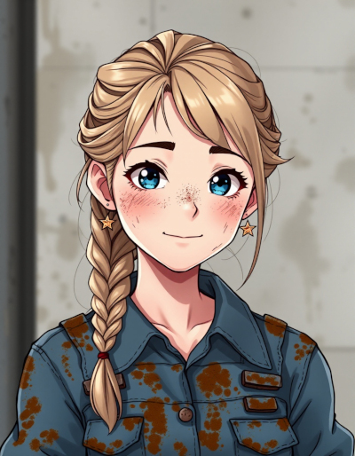
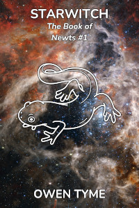
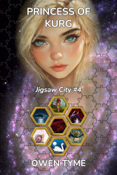
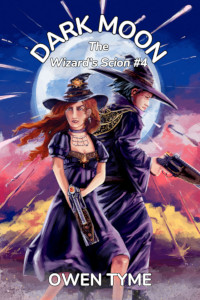
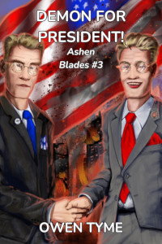
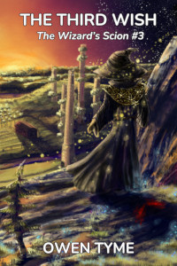
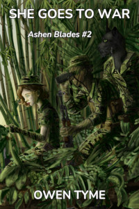
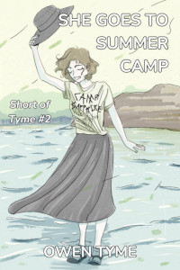
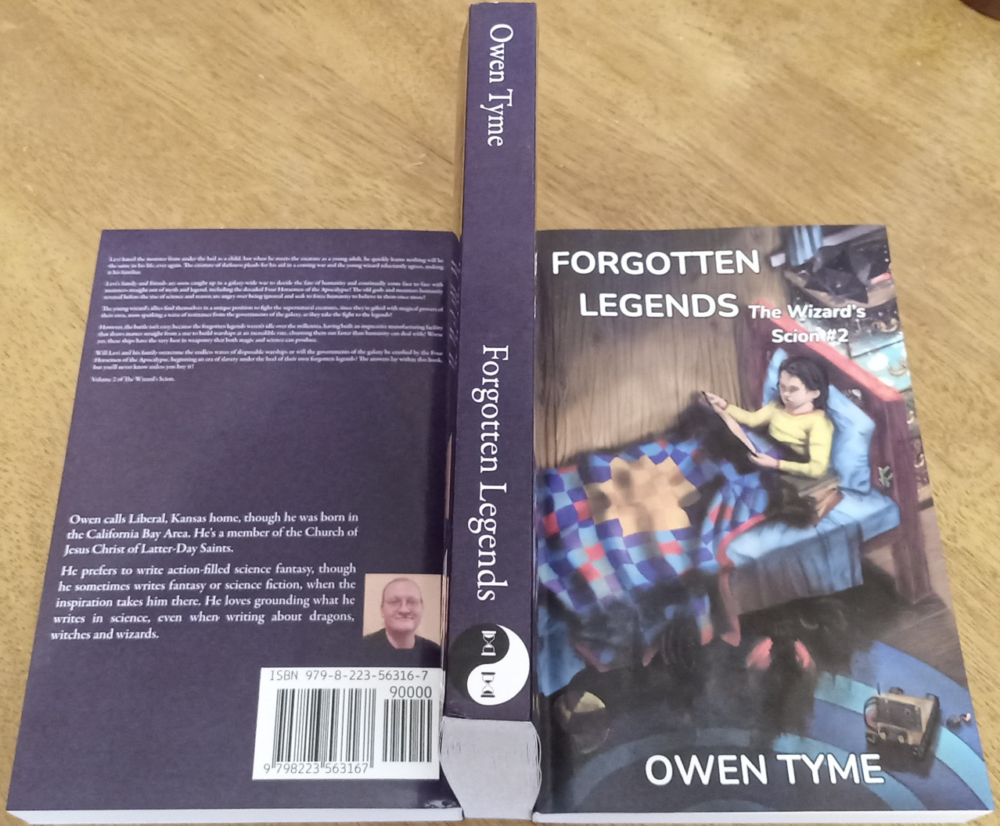

Tymely News
Friday Feature #1: Starwitch
For this feature, I'll be sharing some thoughts on Starwitch, a tale of science and magic working hand in hand, which centers around three sisters and witches, who blast themselves into space aboard a rocket powered by magic that uses water for propellant.
If you find yourself interested as you read, try clicking on the big image, above, or scroll to the end of this post, where all the links are listed, including the one for the audiobook.
Oh, and by the way, the Ebook is free!
If you read this novel, please write a review. Amazon and Goodreads are decent places to do so, as is Barnes and Noble. You can also do that on Royal Road.
Beginning of the End
Imagine, if you will, being run down by a massive star ship that's literally a mountain-sized block of granite, which has massive engines fueled by entire lakes of water and magical reserves so deep, it's faster than even a very small and light ship.
Imagine being dragged from your comparatively puny ship and into the depth of that flying mountain, to face her captain, the undead Queen of the space pirates, a witch that's a thousand years old and kept alive by consuming the souls of powerful witches.
The novel begins with the Blackwell sisters on their knees and facing a blank wall, because precious few are allowed to see the Pirate Queen's face, while the zombie witch analyzes their magic, looking for unique talents she doesn't already possess, with full intent to steal their souls, if they have something she wants.
Marta, the oldest, is declared as having strong Earth and Fire magic, then slated for consumption. She fights back, only to be stunned with lightning magic.
Iris, the middle sister, is also found to have useful magic, because she has a unique talent for turning remote viewing spells into something more physical and she's also sent away, to be consumed, after she's interrogated for details on her magic.

As such, Amelia is returned to her badly damaged ship, Starwitch, because the pirate wants to see what she'll do with her fuel tanks nearly empty, leaving her with only one option to survive: attacking the ship that already ran her down.
Amelia repairs Starwitch in preparation for exactly that desperate move, despite the fact she has no space-worthy weapons and lacks the raw magic required for artillery spells. Nonetheless, without the propellant to reach a friendly port, she has no better option.
Amelia knows she's a dead woman if she doesn't at least get some water for propellant or rescue her sisters, who have strong enough magic to get Starwitch limping to safety, via a solar sail.
Knowing she's a mouse released by the cat, just to see what she might do next, she decides to shoot for a little role-reversal, to show the Queen what a weak witch that's spent a lifetime building machines can do when she's desperate. She follows the Queen with every intention of using her meager resources to take her sisters back or die trying.
However, since she's got days of waiting ahead, while she uses a weak solar sail to follow the flying mountain, her mind drifts to the past. She blames herself for all the trouble she got her family into, both on the ground and in space.
I think that's one of the best opening chapters I've ever written, because it really highlights the primary conflict of the novel, before beginning a sequence of flashbacks to reveal how Amelia got herself into that mess.
The Inspiration
You might be wondering what inspired me to write about witches in space, but it's relatively simple and deeply amusing: Kerbal Space Program. That game is a lot of fun and I spent endless hours building rockets, only to see most of them explode, usually on their way out of the atmosphere of the Kerbal homeworld.
I'd always thought space travel was quite complex and difficult, but in playing that game and getting rockets into orbit, then beyond, I realized it's not as difficult as I thought. Yes, it's complex, but each of the steps along the way is actually quite simple to grasp. It just becomes complex when all of them are combined.
Taking it Further
Throughout playing that game, I kept having a persistent and nagging thought: if this is so readily doable, why wouldn't a culture with access to magic have done it? Surely, with magic available, it would be even easier, right? After all, wizards are often mathematicians in fiction and that would give them the tools to work out the details of space flight.
Then there's another classic trope involving wizards: they're always peering up at the stars, through telescopes. Therefore, I imagined someone like a wizard staring at a gas giant and its moons, working out the principles of orbital mechanics, just like Isaac Newton did, so long ago.
However, I felt that was the point at which a fantasy story would have taken a very different turn compared to our own history, because a wizard with access to energetic magic could easily apply his magical talents to making a rocket fly.
All it would take is a simple heating spell and even crude technology would be enough. All it would take is something to heat water, which would turn it into steam and the more energy imparted, the more thrust it would provide. Imagine the most powerful of wizard, with the magic to reshape the landscape. Now imagine him turning his heart and mind to the stars, to build a rocket. It's not much of a leap, when you know just enough about space flight to be dangerous, as imparted by an amusingly educational game about shooting for orbit.
The setting behind this series ballooned outward from that idea, but I decided to go with witches, rather than wizards, because wizards tend to be solitary, but witches often come in threes.
To me, a small group of witches working together to build a rocket made more sense than a lonely wizard succeeding on his own, because with more hands to do the work, it can be finished sooner. After all, women tend to be more social, which might lead to greater cooperation.
However, this may be the secret, hidden truth behind the reason wizards live in towers. Perhaps their homes house rockets, which they build in preparation for the day they'll leave their world behind. Perhaps that's also the reason wizard towers are sometimes found abandoned, because they made it work...or at least achieved liftoff. Of course, there would be failures and for each solitary success, there would probably be a hundred that blew themselves to Kingdom Come, or just as deadly, crashed. There's a hundred things that could go wrong, of course, but what about the few that made it?
I also played with the idea of towers in this novel, because the support gantry of Starwitch began as a tower designed to hide its construction from prying eyes.
Witches in Space!
Nonetheless, this isn't the story of an enterprising witch experimenting until she got into space, because in this series, space travel was discovered long, long ago, in a place so far away it's not even in the same universe, but that's not really what Starwitch is about.
It's actually about three sisters seeking a place to belong, because their home village didn't accept them and neither did any other along the way, due to prejudice toward witches. They did eventually find a country that accepted witches and even gave them great respect, but only because the place had laws to use witches as weapons of war.
Unable to find peace on the ground, the Blackwell sisters launched themselves into space, only to meet the Queen of the space pirates, who believed the magic of their souls would extend her life for centuries to come.
This is a story about prejudice, family love and persevering in the face of insurmountable hardship, all in the hope of finding home, safety and a place to belong. Oh, and there's also a little touch of romance along the way. Well, it's not much romance, really, but it's still an important plot point for later novels (there's currently four of them, plus a related novella focused on one of the pirates).
Interested? Here's Where You Find the Book!
Oh, and once again, I thought I should point out the fact the Ebook is free, though you won't find it on Amazon, due to exclusivity requirements, but you can still pick up print copies there.
You can also listen to the audiobook from this nice little widget, though it's more a dramatization than audiobook, with a different voice for each character and emotional delivery:

Home, safety, and a place to belong – they seem so easy to find, at least for everyone but Amelia Blackwell and her sisters, who run from accusations of witchcraft at every turn.It started so simply, with a book. No one might have predicted that a book apparently filled with pictures of newts might lead to so much trouble, but The Book of Newts is no ordinary volume on taxonomic detail of amphibians. The magic book reveals its true nature only to Amelia, at the age of ten, teaching her mathematics, science and engineering – subjects she would not otherwise have been exposed to.
Ironically, she and her sisters are accused of witchcraft for having built a horseless carriage, because to the ignorant villagers, there’s no difference between magic and science. They settle in a new land, only to find the same breed of persecution.
In an unusual ray of hope, they’re told of a distant kingdom that openly accepts witches, but shortly after they settle there, the light at the end of the tunnel turns out to be an awful house fire surrounding their gilded cage: they’re drafted into the local military, because their new nation uses witches as living weapons.
The sisters accept the idea that peace will never be found on the ground. Looking to the stars, Amelia builds a space vessel powered by magic and steam, to carry them to a brighter future, hopefully without the strife that’s always followed them.
Unfortunately, the people of the stars have their own worries: an ancient, undead pirate queen, who consumes the souls of powerful witches to extend her own life. The Dead Queen takes Amelia’s sisters and leaves the magically-weak engineer to die, all as a sick form of sport.
Will Amelia survive long enough to overcome this greatest of all threats and rescue her sisters, or will they become fuel to feed the waning magic of a woman that should have been dead centuries before?
Bonus Content: Rowley's Roar
If you're still reading at this point, then you must be very interested, so here's something extra to make you smile, and yes, this is also free! (Well, actually, it's pay what you want):
Rowley's Roar is a musical album based on the first three novels of this series, telling parts of the story in song, from the perspective of a certain someone (I'm trying not to spoil things too much, by being intentionally vague).
The songs most relevant to this novel are Glass House, Ripe for the Taking, The Book of Newts and Mouse With a Gonne, which are tracks 4, 5, 6 and 8.
Glass House, Ripe for the Taking and The Book of Newts are relevant to the encounter between the Blackwell sisters and multiple pirates, during chapters 28-30 and 32, while Mouse With a Gonne covers the events of chapters 1 and 36-41. It includes some spoilers for the climax you may wish to avoid, at least until you've read the book.
Tags: friday-feature, novel
Published: Princess of Kurg
I'm pleased to announce Princess of Kurg, book four of Jigsaw City, has been published.
The Ebook was published last week and print copies just became available today.

Having collected the fragments of the magic city of Kurg from her home planet, Nicole turns her gaze upward, to the stars of the Milky Way, soon coming into conflict with gun-slinging snails, aliens, the dragon she raised from an egg, some really annoying monkeys with crossbows and even fairies.Barely sleeping, due to the stress, she's frustrated by the politics of running a city and the endless diplomacy required to gain access to every corner of the galaxy, but controlling her anger always was one of her weakest points.
Ruling a magic, flying city was never Nicole's dream, but with no better alternative, her reality increasingly begins to resemble one of her nightmares...
Will Nicole blow her top and possibly a few cities along the way, or will the poor woman find peace and a little quality sleep? Will she make the hard choices, or will the hard choices make her?
Tags: jigsaw-city, novel, publishing
Stone Prophet is Published!
I'm pleased to announce volume thee of Jigsaw City, titled Stone Prophet, has been published.
The Ebook released last week and print copies released today. The cover art hasn't quite made its way to Amazon, though it is for sale there.

Nicole Jacobs wants to reassemble the ancient and magical City of Kurg, but as a result of a recent battle, pieces of the city were scattered all over her world. Worse, unlike the ones scattered around the galaxy, which constantly talk to her, nagging to be whole again, they’re quiet and deactivated.As she struggles with the question of how to find them, she senses a piece of the city coming to life again and she’s drawn like a moth to the flame, to an ancient ruin built by the stone men that made the city. There, she meets a dwarf history miner, who holds the piece, which is folded up like a little coin.
More interesting, however, is an amber lens in his possession that shows glimpses of the past and future when looked through. Even more odd, it’s been whispering into the dwarf’s mind. The strange object is presented to the stone men, who know what it is: it’s a piece of the Seventh Sage, one of their people with a prophetic gift.
Nicole leads a team on a series of missions to collect the Sage in the hopes he can locate the missing pieces of Kurg. The journey is harsh and emotionally painful, because Nicole is forced to kill, not just once, but three times, leaving her distraught, because she wishes she’d found another way.
Collecting the last piece is especially difficult, forcing her to test her resolve with the life of a friend hanging in the balance.
Nicole completes the Sage, but little does she know, a great and powerful enemy lurks within his mind, an ancient and powerful witch whose powers are in a class of their own.
Will Nicole rise to the challenge and fulfill prophesy by becoming the Leader of the stone men, or will the parasitic soul that’s taken over the Sage steal her fate?
Tags: jigsaw-city, novel, publishing
Dark Moon Released!
Due to an error on my part, instead of one week's wait for Dark Moon to be released, it's out now.
I would have preferred to give a little time for it to show up in stores before release day, but I set the date as July 23, 2024, instead of August 23, 2024, largely because I've been dealing with a lot and yesterday, I got confused about what month it was, just long enough to put the wrong publishing date on this one. Oops.
Oh well. If it isn't in the store you'd prefer, please be patient. It may take a day or two.

The Steel Wizard, Captain Levi Jacobs, second-guesses himself over a shuttle and her crew that dangerously vanish into deep space. As search and rescue operations fail to turn up any any trace of them and he’s pressured to declare them ‘missing, presumed dead’, his worries grow.After following a nearly-hopeless trail of bread crumbs, he discovers the shuttle crew managed to return to their home planet, but were killed shortly after arriving by a skilled necromancer-witch named Cha’da and her crew of goblin pirates. With his hopes of rescuing his people dashed, Levi turns his attention to punishing the responsible party.
In the background, strange mysteries unfold as the invisible moon no one knew the world had reveals itself as a crescent that grows toward a full circle in the sky!
As the sun sets and the full moon rises, Levi faces Cha’da in a magical duel, but nothing is as it appears. Cha’da isn’t evil, having killed the shuttle crew in self-defense, while subtly trying to redirect her blood-thirsty pirate crew to a less violent way of life.
As night begins and strange ‘Harbingers of Doom’ from the moon crash into the ocean, bent on harvesting life energy, the two enemies are forced to fight back-to-back, just to survive!
Will Levi and Cha’da live long enough to save the world or will the alien harvesters steal the souls of everyone they love as part of their dark harvest?
Tags: the-wizards-scion, novel, publishing
New Release: Demon for President!
I'm delighted to announce the release of a new book! The third volume of Ashen Blades, Demon for President! is now available as an Ebook!

The Hunter's demonic arch-nemesis, Vogerath, returns to Earth once more, but this time, he's running for President of the United States, on the 2024 ballot! Worse yet, the demon’s unique power to be in multiple places at once allows him to convincingly pretend to be identical twins, running as both a Republican and Democrat!The other candidates all drop out of the race under mysterious circumstances and with his best competition being himself, he's practically assured a win!
Soon, the American people are lapping up the snake-in-a-suit’s every word as if it were ambrosia, calling out his name at every turn, magically charmed to believe he’s the best thing since sliced bread, despite the checkered, criminal history of his “family.”
Hard pressed to get rid of him, the half-demon Hunter and her allies kill him repeatedly, but he pops back up like a bad weed, making all of his appointments on time, photogenically kissing babies, cutting the ribbons of stores and donating laundered blood-money to charitable causes.
Will the hunter manage to end the demon's presidential campaign before election day? If she doesn’t, the USA may just get a Demon for President! Buy this book today and find out for yourself!
There's also a promotional page for this book, which includes links to political pins you can buy.
Tags: ashen-blades, novel, publishing
The Third Wish, in Ebook and Print!

Plagued by horrific nightmares, the consequences of war and reeling from the loss of his family, the Steel Wizard, Levi Jacobs copes by throwing himself into work, but old enemies gain the power to travel through time, refusing to give him a moment to grieve. Making matters worse, an impatient and violent alien pirate lurks in orbit.Far from friendly, the alien pirate is boiling with rage over several massive blows to his pride at the hands of humanoids. Unable to kill those responsible, instead he plots revenge on their child, Levi, and everyone around him, to regain face in the eyes of his own kind, for whom personal pride is literally everything, including social ranking and the right to rule.
While Levi's busy dealing with the pirate, a deposed prince scours history for allies, putting together a frightening misfit team of spies, dangerous trolls and wizards that all have a grudge to settle with Levi and his family. Intent on changing history to suit themselves, they strike at the foundations of the present, threatening to kill Levi's father at a pivotal moment on which the history of the galaxy hangs.
Will Levi solve this mess and move forward with his life or will he buckle under the responsibility of protecting both what he has and what he's lost?
I'm very pleased to announce that book three of The Wizard's Scion, The Third Wish is now available for 3.99 in Ebook or 18.99 in paperback (US dollars).
I hope you'll enjoy it as much as I did!
Tags: ashen-blades, novel, publishing
She Goes to War, Now in Print!
The second volume of the Ashen Blades series, titled She Goes to War, is available in print! In addition, She Goes to Summer Camp, the short story included in She Goes to War, is available both as a free Ebook and in print.
If you want to own both, buy the novel. If you want to get a free taste of the Ashen Blades series, claim your free copy of She Goes to Summer Camp today!
She Goes to War

The Hunter never wanted to go to war, but in 1972, she senses the return of her demonic arch-nemesis, Vogerath, to the world. Following his magic like a bloodhound, she finds herself inexplicably drawn to Vietnam, a war zone.With a pressing need to kill Vogerath, who claims to be the serpent from the Garden of Eden, the half-demon Hunter is joined by her detective partner, Clayton Simmons, and a powerful witch, Verda Bagley.
It was meant to be a simple search and destroy mission, but nothing in the jungles of Vietnam is ever simple and their plans go off the rails the moment the Hunter sets foot on the ground. She’s overcome by the magic of the jungle, which causes her to forget her humanity and transform into a great, black cat with blue eyes!
Her team are forced to subdue her, to bring her back to her senses, but the consequences of her instinct-driven actions leave them troubled, because she killed a demon disguised as an American soldier and his best friend wants revenge! As this fresh, unwanted conflict comes to a close, the Hunter’s hands are reluctantly stained with human blood.
Vogerath’s jungle hideout is surrounded by soldiers and the raid begins, but the Hunter’s plan continues to go wrong. After a unit of tanks is overrun, the US military throws everything they’ve got at the demons, inadvertently playing into Vogerath’s hands! The demon grows stronger with each attack and awaits the power of a nuclear strike, planning to use it to open a portal to Hell, so endless legions of demons can march forth to conquer the Earth!
Will the Hunter and her friends stop Vogerath in time or will the world be conquered by demons? Buy this book today and find out!
Includes a bonus novella: She Goes to Summer Camp, in which the Hunter faces the most unthinkable and horrifying of challenges: teenagers.
She Goes to Summer Camp

Camp Sapphire Friendship, a summer camp for teens, was the last place the Hunter wanted to go, but she'd made a vow to protect humanity from demons, no matter where they appeared and in 1986, her team of demon-slaying experts is called on to investigate. However, to make things even worse, the Hunter's team leader sends her into the camp as an undercover operative, under the guise of a regular teen, despite the fact that the half-demon girl being old enough to be the grandmother of the kids at camp.She's soon caught up in the daily minutiae of camp, learning a few new things along the way, while followed around like a puppy by a new "friend", a motor-mouthed girl that never shuts up. On the very first day, she also acquires a trio of teenage foes in the form of some valley-girl sisters from Los Angeles, who take every opportunity to insult and plays pranks on her.
However, despite the innocent look of the place, danger lurks around every corner, because the owner of the camp, Miss Macie Weber, is an untrained witch, whose unknowing, haywire magic threatens to kill everyone by summoning powerful and vengeful nature spirits, on top of the demons already lurking among the humans at camp!
Will the Hunter find and slay the the demons or will the nature spirits take offense at her mere presence, because she's had the Jungle Spirit stuck inside her head since 1972?
Download today and find out!
Tags: ashen-blades, novel, publishing
She Goes to War, Coming April 5th!
The second volume of the Ashen Blades series, titled She Goes to War, is now available for pre-order as an Ebook. The print edition still has a few details to work out, but should be available soon.
She Goes to War will be available on April 5th, 2024!
This one is special to me, because a friend of mine that fought in Vietnam talked me into writing it and then served as my primary source of information on the jungles of Vietnam. According to him, I hit the nail on the head and the details of the setting are as close to perfect as they can be.
I hope you'll enjoy it!
Due to how serious and emotionally difficult this novel was to write, I decided to pair it with a rather humorous bonus novella, She Goes to Summer Camp, in which our stalwart heroine goes undercover at a summer camp where teens have gone missing four years in a row, in search of the demon responsible, but nothing could have prepared her for the horrors of dealing with teenagers.
When final arrangements for art are complete, She Goes to Summer Camp will also be released as a short story as part of my Short of Tyme collection.
The Hunter never wanted to go to war, but in 1972, she senses the return of her demonic arch-nemesis, Vogerath, to the world. Following his magic like a bloodhound, she finds herself inexplicably drawn to Vietnam, a war zone.With a pressing need to kill Vogerath, who claims to be the serpent from the Garden of Eden, the half-demon Hunter is joined by her detective partner, Clayton Simmons, and a powerful witch, Verda Bagley.
It was meant to be a simple search and destroy mission, but nothing in the jungles of Vietnam is ever simple and their plans go off the rails the moment the Hunter sets foot on the ground. She’s overcome by the magic of the jungle, which causes her to forget her humanity and transform into a great, black cat with blue eyes!
Her team are forced to subdue her, to bring her back to her senses, but the consequences of her instinct-driven actions leave them troubled, because she killed a demon disguised as an American soldier and his best friend wants revenge! As this fresh, unwanted conflict comes to a close, the Hunter’s hands are reluctantly stained with human blood.
Vogerath’s jungle hideout is surrounded by soldiers and the raid begins, but the Hunter’s plan continues to go wrong. After a unit of tanks is overrun, the US military throws everything they’ve got at the demons, inadvertently playing into Vogerath’s hands! The demon grows stronger with each attack and awaits the power of a nuclear strike, planning to use it to open a portal to Hell, so endless legions of demons can march forth to conquer the Earth!
Will the Hunter and her friends stop Vogerath in time or will the world be conquered by demons? Buy this book today and find out!
Includes a bonus novella: She Goes to Summer Camp, in which the Hunter faces the most unthinkable and horrifying of challenges: teenagers.
Tags: ashen-blades, novel, publishing
Fresh Release: She Hunts Demons
She Hunts Demons is the first volume of a new series titled Ashen Blades. It's heavy with action, magic, demons, witches, gunplay, conspiracies, a demon's plot to rule the world and an extra helping of wild and woolly weirdness, all in a Film-Noir inspired setting.
I enjoyed writing the dialog, which uses 1940's idioms. I also played around with many Film-Noir tropes, which is why I wanted a mostly black and white cover.
It was a challenging piece to write, but it was also immensely fun, because the protagonist is functionally mute, speaking largely though actions rather than words. She's also the most cocky character I've ever written, so it's probably a good thing she couldn't voice her absurdly stubborn level of self-confidence, which sometimes borders on the insane.
I apologize to those that were anticipating the next volume of The Wizard's Scion, but the third book of this new series, Demon for President! (which I'm in the middle of writing), takes place on the backdrop of the current presidential election, so I'm pressed for time and working to get this new series established so I can publish that piece in a timely fashion, probably in April.
The next book published should be Ashen Blades volume 2, She Goes to War.
You can rest assured: The Wizard's Scion will be published in its entirety, but for now it must wait on the back burner. Again, I'm sorry, but please take a look at She Hunts Demons. I doubt you'll be disappointed.
The half-demon girl who calls herself the Hunter never really considered why she wanted all demons dead, but when she’s presented with the one responsible for killing her parents, she loses all rationality, going on the warpath.
It started with a crying widow and a stack of letters, leading the Hunter’s private detective partner, Clayton Simmons, to investigate a series of financial crimes. These threads all lead to the mysterious Otto Vogerath, who’s rumored to be a mobster.
At the same time, the Hunter’s earliest memories begin coming into focus, giving her clarity about the death of her parents at the hands of the very same, because Vogerath isn’t just a mobster: he’s also a demon that claims to be the serpent from the Garden of Eden.
The duo and their allies are soon caught in a complex spider’s web of mystery, involving conspiracies, murders, atom bombs and the demon’s plot to tear a massive hole in reality, all of which revolves around the life of the Hunter. Worse still, the demon requires the Hunter’s cooperation for his plans to succeed and will do almost anything to get it, repeatedly proving to her that everyone she cares for is in danger, so long as she stands in the way of what he wants.
Will Simmons and the Hunter save the world or will the serpent succeed in opening a portal to Hell, so legions of demons can march forth to conquer the world? The answers lay within this book, but only for those brave enough to buy it!
Tags: ashen-blades, novel, writing, publishing
Author Copies of Forgotten Legends
Today I got my hands on the author copies of Forgotten Legends I ordered.
Just like Troll Song, it's a joy to see something I wrote in print and again, the camera in my phone just doesn't do the art justice.
Oh, and by the way, the Ebook sale is over at the end of today, so if you want to grab a copy of one of my books at a discount, you better move fast!

Tags: writing, publishing, novel, sale
Available for Pre-Order: Forgotten Legends!
The second volume of The Wizard's Scion series, titled Forgotten Legends, is now available for pre-order as an Ebook. The print edition should follow, soon.
Forgotten Legends releases on November 13, 2023.
Levi hated the monster from under the bed as a child, but when he meets the creature as a young adult, he quickly learns nothing will be the same in his life, ever again. The creature of darkness pleads for his aid in a coming war and the young wizard reluctantly agrees, making it his familiar.
Levi’s family and friends are soon caught up in a galaxy-wide war to decide the fate of humanity and continually come face to face with monsters straight out of myth and legend, including the dreaded Four Horsemen of the Apocalypse! The old gods and monsters humanity revered before the rise of science and reason are angry over being ignored and seek to force humanity to believe in them once more!
The young wizard’s allies find themselves in a unique position to fight the supernatural creatures, since they’re gifted with magical powers of their own, soon sparking a wave of resistance from the governments of the galaxy, as they take the fight to the legends!
However, the battle isn’t easy, because the forgotten legends weren’t idle over the millennia, having built an impressive manufacturing facility that draws matter straight from a star to build warships at an incredible rate, churning them out faster than humanity can deal with! Worse yet, these ships have the very best in weaponry that both magic and science can produce.
Will Levi and his family overcome the endless waves of disposable warships or will the governments of the galaxy be crushed by the Four Horsemen of the Apocalypse, beginning an era of slavery under the heel of their own forgotten legends? The answers lay within this book, but you’ll never know unless you buy it!
Tags: the-wizards-scion, novel, writing, publishing
Troll Song is Released!
The first novel in The Wizard's Scion series, titled Troll Song, is available for purchase in both eBook and paperback forms. You can find out more by clicking this link or by clicking on the image, below.
Lyra never intended to cause the extinction of the troll race, but when she uses the power of troll song to read the mind of a dwarf, she’s forced to compare her life of abuse to that of a loving family.
Acting for the good of the world, Lyra betrays her family and kills her oldest sister, creating an opportunity for the dwarves to defeat the troll army.
The middle sister, Lyra’s childhood nemesis, Nicole, is furious beyond all rationality and determined to make Lyra pay, no matter the cost! Death would be too good for Lyra, so Nicole seeks to telepathically destroy her mind, instead!
Luring her sister into a trap, Lyra drops an entire mountain of ice on their heads, intent on ending Nicole at the expense of her own life! Waking after thousands of years frozen sleep in a world of wonders both scientific and magical, Nicole steals a powerful star ship and the contest begins anew!
Will Lyra defeat her murderous sister and end the troll threat or will Nicole destroy Lyra’s mind to fulfill her vow of vengeance, followed by raiding and pillaging as she sees fit? Buy this book and find out, today!
Tags: the-wizards-scion, novel, publishing